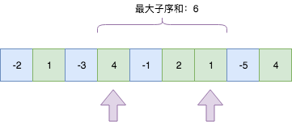
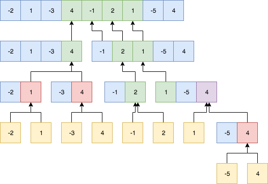

最大子序和 Maximum Subarray
题目
给定一个整数数组 nums ，找到一个具有最大和的连续子数组（子数组最少包含一个元素），返回其最大和
Given an integer array nums, find the contiguous subarray (containing at least one number) which has the largest sum and return its sum.
Example:
Input: [-2,1,-3,4,-1,2,1,-5,4],
Output: 6
Explanation: [4,-1,2,1] has the largest sum = 6.
Follow up:
If you have figured out the O(n) solution, try coding another solution using the divide and conquer approach, which is more subtle.
思路&题解
常规暴力求解
求最大子集合股票问题有点类似，首先想到的一般都是暴力求解：
- 我们顺序从第一个元素开始计算最大子集和；
- 然后将每一轮取较大的一个；
- 最终得到整个数组的最大连续和。
public int maxSubArray(int[] nums) {
int max = nums[0];
for (int i = 0; i < nums.length; i++) {
int sum = nums[i];
int sumMax = sum;
for (int j = i + 1; j < nums.length; j++) {
sum += nums[j];
sumMax = Math.max(sumMax, sum);
}
max = Math.max(max, sumMax);
}
return max;
}
提交后可以看到,时间复杂度上还有优化空间O(n^2)：
[!NOTE] 执行用时 : 148 ms, 在Maximum Subarray的Java提交中击败了5.08% 的用户
内存消耗 : 40.1 MB, 在Maximum Subarray的Java提交中击败了67.48% 的用户
O(n)优化版本
题目要求如果能O(n)内求解的话可以考虑用分治法，下面我们先再看下如何做到时间复杂度是O(n)。
凡是O(n)的问题，肯定最多只能循环一次。分析下什么情况下能得到最大的连续子集：
- 连续的子集要保持和最大，肯定尽量保持都是正数，正数有有利于和增大；
- 如果存在负数，则必须是负数后面有正数，可以抵消，负数的负面作用；
- 负数不可能是连续子集的开头或者结尾，最多存在于中间位置；
前面的暴力算法我们其实没有分析规律，只是单纯的以结果为导向，因此效率不高，基于这三个特征，特别是第三点。我们可以调整算法的比较思路：
- 当前和如果大于0，可以继续累加；如果小于0，则抛弃，从下一个位置继续求解；
- 在循环中，同时记录当前求和的值和最大和，用于保证
特征2: 如果存在负数，则必须是负数后面有正数，可以抵消，负数的负面作用

public int maxSubArray(int[] nums) {
int max = nums[0];
int sum = 0;
for (int i = 0; i < nums.length; i++) {
if (sum > 0) {
sum += nums[i];
} else {
sum = nums[i];
}
max = Math.max(max, sum);
}
return max;
}
[!NOTE] 执行用时 : 3 ms, 在Maximum Subarray的Java提交中击败了78.21% 的用户
内存消耗 : 38 MB, 在Maximum Subarray的Java提交中击败了87.63% 的用户
O(nlgn)分治法
下面再看一下利用分治思想的解法，也就是题干中的try coding another solution using the divide and conquer approach
分治思想在于将问题规模减小，比如通过二分法，不断将问题规模缩小，递归求解每个更小的区间，最后汇总问题的答案。
在这个问题中，如果要使用分治去递归求解，需要将问题的答案进行分解，对于二分之后的数组，最大子序和有以下三种情况：
- 连续的子序列正好全部在前半截数组；
- 连续的子序列正好全部在后半截数组；
- 连续的子序列在左右数组内个存在一部分，完整序列为左右两部分加和；

public int maxSubArray(int[] nums) {
return maxSub(nums, 0, nums.length - 1);
}
public int maxSub(int[] nums, int left, int right) {
if (left == right) {
return nums[left];
}
int mid = (left + right) / 2;
int leftSum = maxSub(nums, left, mid);
int rightSum = maxSub(nums, mid + 1, right);
int leftSumPart = 0;
int tmpSum = 0;
for (int i = mid; i >= left; i--) {
tmpSum += nums[i];
if (tmpSum >= leftSumPart || leftSumPart == 0) {
leftSumPart = tmpSum;
}
}
int rightSumPart = 0;
tmpSum = 0;
for (int i = mid + 1; i <= right; i++) {
tmpSum += nums[i];
if (tmpSum >= rightSumPart || rightSumPart == 0) {
rightSumPart = tmpSum;
}
}
return Math.max(Math.max(leftSum, rightSum), leftSumPart + rightSumPart);
}
[!NOTE] 执行用时 : 5 ms, 在Maximum Subarray的Java提交中击败了66.78% 的用户
内存消耗 : 38.9 MB, 在Maximum Subarray的Java提交中击败了80.43% 的用户知识点分析
算法的调优，往往需要观察问题的规律，如果能找到正确规律并简化判定条件，则可以降低时间/空间复杂度。